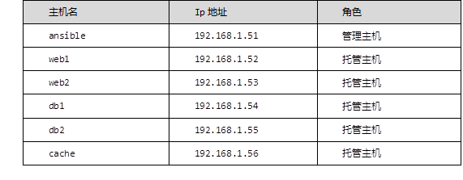

本案例要求准备ansible的基础环境：
此方案需要准备六台主机，1台管理主机，5台托管主机，以实现批量程序部署，批量运行命令等功能，具体要求如表-1所示：
表-1
实现此案例需要按照如下步骤进行。
步骤一：基础环境准备
1）启动6台虚拟机，由于已经讲过怎么创建，这里不再在案例里体现
2）真机配置yum仓库
[root@room9pc01 ~]# tar -xf ansible_soft.tar.xz [root@room9pc01 ~]# cd ansible_soft/ [root@room9pc01 ansible_soft]# mkdir /var/ftp/ansible [root@room9pc01 ansible_soft]# cp * /var/ftp/ansible [root@room9pc01 ansible_soft]# createrepo /var/ftp/ansible Spawning worker 0 with 1 pkgs Spawning worker 1 with 1 pkgs Spawning worker 2 with 1 pkgs Spawning worker 3 with 1 pkgs Spawning worker 4 with 1 pkgs Spawning worker 5 with 1 pkgs Workers Finished Saving Primary metadata Saving file lists metadata Saving other metadata Generating sqlite DBs Sqlite DBs complete
3）修改主机名（容易区分，6台机器都需要修改）这里以ansible主机为例子
[root@localhost ~]# echo ansible > /etc/hostname [root@localhost ~]# hostname ansible
4）配置ip（6台机器都需要配置），这里以ansible主机为例子
[root@localhost ~]# vim /etc/sysconfig/network-scripts/ifcfg-eth0
# Generated by dracut initrd
DEVICE="eth0"
ONBOOT="yes"
IPV6INIT="no"
IPV4_FAILURE_FATAL="no"
NM_CONTROLLED="no"
TYPE="Ethernet"
BOOTPROTO="static"
IPADDR=192.168.1.51
PREFIX=24
GATEWAY=192.168.1.254
[root@localhost ~]# systemctl restart network
[root@localhost ~]# ifconfig
eth0: flags=4163<UP,BROADCAST,RUNNING,MULTICAST> mtu 1500
inet 192.168.1.51 netmask 255.255.255.0 broadcast 192.168.1.255
ether 52:54:00:b2:69:9e txqueuelen 1000 (Ethernet)
RX packets 234 bytes 16379 (15.9 KiB)
RX errors 0 dropped 36 overruns 0 frame 0
TX packets 31 bytes 2618 (2.5 KiB)
TX errors 0 dropped 0 overruns 0 carrier 0 collisions 0
5）配置yum客户端，在管理节点ansible上面配置
[root@ansible ~]# vim /etc/yum.repos.d/local.repo [local_repo] name=CentOS-$releasever - Base baseurl="ftp://192.168.1.254/system" enabled=1 gpgcheck=1 [local] name=local baseurl="ftp://192.168.1.254/ansible" enabled=1 gpgcheck=0 [root@ansible ~]# yum clean all [root@ansible ~]# yum repolist [root@ansible ~]# yum -y install ansible [root@ansible ~]# ansible --version ansible 2.4.2.0 //显示版本说明安装成功 config file = /etc/ansible/ansible.cfg configured module search path = [u'/root/.ansible/plugins/modules', u'/usr/share/ansible/plugins/modules'] ansible python module location = /usr/lib/python2.7/site-packages/ansible executable location = /usr/bin/ansible python version = 2.7.5 (default, Aug 4 2017, 00:39:18) [GCC 4.8.5 20150623 (Red Hat 4.8.5-16)]
6）请在6台主机上面配置/etc/hosts，这里以ansible主机为例子
[root@ansible ansible]# cat /etc/hosts 192.168.1.51 ansible 192.168.1.52 web1 192.168.1.53 web2 192.168.1.54 db1 192.168.1.55 db2 192.168.1.56 cache
本案例要求：
实现此案例需要按照如下步骤进行。
步骤一：ansible.cfg配置文件
[root@ansible ~]# cd /etc/ansible/ [root@ansible ansible]# ls ansible.cfg hosts roles [root@ansible ansible]# vim ansible.cfg #inventory = /etc/ansible/hosts //指定分组文件路径，主机的分组文件hosts [selinux] //组名称，selinux的相关选项在这个下面配置 ... [colors] //组名称，colors的相关选项在这个下面配置 ...
步骤二：定义主机，分组和子组练习
1）静态主机的定义
[root@ansible ansible]# vim hosts
[web]
web1
web2
[db]
db[1:2] //1:2为db1到db2两台主机，1:20为db1到db20多台主机
[other]
cache
[root@ansible ansible]# ansible web --list-host //显示web组的主机
hosts (2):
web1
web2
[root@ansible ansible]# ansible db --list-host
hosts (2):
db1
db2
[root@ansible ansible]# ansible other --list-host
hosts (1):
cache
[root@ansible ansible]# ansible all --list-host //显示所有组的主机
hosts (5):
web1
web2
cache
db1
db2
2）直接测试
[root@ansible ansible]# ansible cache -m ping
//测试是否可以连接，若失败颜色为红色
cache | UNREACHABLE! => {
"changed": false,
"msg": "Failed to connect to the host via ssh: ssh: Could not resolve hostname cache: Name or service not known\r\n",
"unreachable": true
}
3）修改后测试
[root@ansible ansible]# vi hosts
[other]
cache ansible_ssh_user="root" ansible_ssh_pass="a"
[root@ansible ansible]# ansible other -m ping //测试成功，颜色为绿色
cache | SUCCESS => {
"changed": false,
"ping": "pong"
}
4）不检测主机的sshkey，在第一次连接的时候不用输入yes
[root@ansible ansible]# vim ansible.cfg
61 host_key_checking = False
[root@ansible ansible]# vim hosts
[web]
web1
web2
[web:vars] //web组:变量(vars不改)，web组的多台机器共用一个用户名和密码
ansible_ssh_user="root"
ansible_ssh_pass="a"
[root@ansible ansible]# ansible web -m ping
web2 | SUCCESS => {
"changed": false,
"ping": "pong"
}
web1 | SUCCESS => {
"changed": false,
"ping": "pong"
}
步骤三：定义子组
[root@ansible ansible]# vi hosts
[app:children] //指定子分组(app可改:children不改)，web，db是提前分好的组
web
db
[app:vars]
ansible_ssh_user="root"
ansible_ssh_pass="a"
[root@ansible ansible]# ansible app --list-host //查看
hosts (4):
web1
web2
db1
db2
[root@ansible ansible]# ansible app -m ping //测试
web1 | SUCCESS => {
"changed": false,
"ping": "pong"
}
web2 | SUCCESS => {
"changed": false,
"ping": "pong"
}
db1 | SUCCESS => {
"changed": false,
"ping": "pong"
}
db2 | SUCCESS => {
"changed": false,
"ping": "pong"
}
步骤四：多路径练习
自定义的ansible文件只在当前路径生效
1）多路径
[root@ansible ~]# mkdir aaa [root@ansible ~]# cd aaa/ [root@ansible aaa]# vim myhost [app1] web1 db1 [app2] web2 db2 [app:children] app1 app2 [other] cache [app:vars] ansible_ssh_user="root" ansible_ssh_pass="a" [root@ansible aaa]# touch ansible.cfg [root@ansible aaa]# grep -Ev "^#|^$" /etc/ansible/ansible.cfg [defaults] roles_path = /etc/ansible/roles:/usr/share/ansible/roles host_key_checking = False [inventory] [privilege_escalation] [paramiko_connection] [ssh_connection] [persistent_connection] [accelerate] [selinux] [colors] [diff] [root@ansible aaa]# vim ansible.cfg [defaults] inventory = myhost host_key_checking = False
2）测试结果
[root@ansible aaa]# ansible app1 -m ping
web1 | SUCCESS => {
"changed": false,
"ping": "pong"
}
db1 | SUCCESS => {
"changed": false,
"ping": "pong"
}
[root@ansible aaa]# ansible app -m ping
web1 | SUCCESS => {
"changed": false,
"ping": "pong"
}
db1 | SUCCESS => {
"changed": false,
"ping": "pong"
}
db2 | SUCCESS => {
"changed": false,
"ping": "pong"
}
web2 | SUCCESS => {
"changed": false,
"ping": "pong"
}
[root@ansible aaa]# ansible app --list-host
hosts (4):
web1
db1
web2
db2
[root@ansible aaa]# cd
[root@ansible ~]# ansible app1 --list-host //切换到别的目录，测试失败
[WARNING]: Could not match supplied host pattern, ignoring: app1
[WARNING]: No hosts matched, nothing to do
hosts (0):
本案例要求：
实现此案例需要按照如下步骤进行。
步骤一：脚本输出主机列表
[root@ansible ~]# cd aaa
[root@ansible aaa]# vim host.py
#!/usr/bin/python
import json
hostlist = {}
hostlist["bb"] = ["192.168.1.52", "192.168.1.53"]
hostlist["192.168.1.54"] = {
"ansible_ssh_user":"root","ansible_ssh_pass":"pwd"
}
hostlist["aa"] = {
"hosts" : ["192.168.1.55", "192.168.1.56"],
"vars" : {
"ansible_ssh_user":"root","ansible_ssh_pass":"pwd"
}
}
print(json.dumps(hostlist))
[root@ansible aaa]# chmod 755 ./host.py
步骤二：脚本输出样例（这样写输出的结果有些乱）
[root@ansible aaa]# ./host.py
{"aa": {"hosts": ["192.168.1.55", "192.168.1.56"], "vars": {"ansible_ssh_user": "root", "ansible_ssh_pass": "a"}}, "192.168.1.54": {"ansible_ssh_user": "root", "ansible_ssh_pass": "a"}, "bb": ["192.168.1.52", "192.168.1.53"]}
步骤三：可以用shell脚本输出
[root@ansible aaa]# vim my.sh
#!/bin/bash
echo '
{ "aa": {
"hosts":
["192.168.1.55", "192.168.1.56"],
"vars": {
"ansible_ssh_user": "root",
"ansible_ssh_pass": "a"}
},
}'
[root@ansible aaa]# chmod 755 my.sh
[root@ansible aaa]# ./my.sh
{ "aa": {
"hosts":
["192.168.1.55", "192.168.1.56"],
"vars": {
"ansible_ssh_user": "root",
"ansible_ssh_pass": "a"}
},
}
[root@ansible aaa]# vim ansible.cfg
[defaults]
inventory = my.sh
host_key_checking = False
[root@ansible aaa]# ansible aa -m ping
192.168.1.55 | SUCCESS => {
"changed": false,
"ping": "pong"
}
192.168.1.56 | SUCCESS => {
"changed": false,
"ping": "pong"
}
步骤二：批量执行
1）查看负载
[root@ansible aaa]# ansible app -m command -a 'uptime' db1 | SUCCESS | rc=0 >> 11:35:52 up 1:59, 2 users, load average: 0.00, 0.01, 0.01 web1 | SUCCESS | rc=0 >> 11:35:52 up 2:00, 2 users, load average: 0.00, 0.01, 0.02 db2 | SUCCESS | rc=0 >> 11:35:53 up 1:59, 2 users, load average: 0.00, 0.01, 0.03 web2 | SUCCESS | rc=0 >> 11:35:52 up 1:59, 2 users, load average: 0.00, 0.01, 0.02
2）查看时间
[root@ansible aaa]# ansible app -m command -a 'date +%F\ %T' db1 | SUCCESS | rc=0 >> 2018-09-06 11:42:18 web1 | SUCCESS | rc=0 >> 2018-09-06 11:42:18 web2 | SUCCESS | rc=0 >> 2018-09-06 11:42:18 db2 | SUCCESS | rc=0 >> 2018-09-06 11:42:19
本案例要求：
实现此案例需要按照如下步骤进行。
步骤一：批量部署证书文件，给所有主机部署密钥
1）创建密钥
[root@ansible aaa]# cd /root/.ssh/ [root@ansible .ssh]# vi /etc/ansible/hosts [web] web1 web2 [db] db[1:2] [other] cache [root@ansible .ssh]# ansible all -m ping //直接ping会报错 [root@ansible .ssh]# ssh-keygen -t rsa -b 2048 -N '' //创建密钥
2）给所有主机部署密钥
[root@ansible .ssh]# ansible all -m authorized_key -a "user=root exclusive=true manage_dir=true key='$(< /root/.ssh/id_rsa.pub)'" -k
SSH password: //输入密码
[root@ansible .ssh]# ansible all -m ping //成功
web2 | SUCCESS => {
"changed": false,
"ping": "pong"
}
db2 | SUCCESS => {
"changed": false,
"ping": "pong"
}
web1 | SUCCESS => {
"changed": false,
"ping": "pong"
}
cache | SUCCESS => {
"changed": false,
"ping": "pong"
}
db1 | SUCCESS => {
"changed": false,
"ping": "pong"
}
[root@ansible .ssh]# ssh web1 //不需要输入密码,可以直接登陆
Last login: Thu Sep 6 11:49:00 2018 from 192.168.1.51
[root@web1 ~]#
本案例要求：
实现此案例需要按照如下步骤进行。
步骤一：练习模块
ansible-doc //模块的手册，相当于man
ansible-doc -l //列出所有模块
ansible-doc 模块名 //查看指定模块的帮助信息
1）ping模块
[root@ansible .ssh]# ansible web1 -m ping
web1 | SUCCESS => {
"changed": false,
"ping": "pong"
}
2）command模块
[root@ansible .ssh]# ansible web1 -m command -a 'chdir=/tmp touch f1' //创建成功 [root@web1 ~]# cd /tmp/ [root@web1 tmp]# ls //在web1上面查看 f1
3）shell模块
[root@ansible .ssh]# ansible web1 -m shell -a 'chdir=/tmp touch f2' //创建成功 [root@web1 ~]# cd /tmp/ [root@web1 tmp]# ls //在web1上面查看 f2
4）raw模块
[root@ansible .ssh]# ansible web1 -m raw -a 'chdir=/tmp touch f3' //文件可以创建，但无法切换目录，文件在用户家目录下生成 web1 | SUCCESS | rc=0 >> Shared connection to web1 closed. [root@web1 tmp]# cd /root/ [root@web1 ~]# ls //在web1上面查看 f3
5）script模块
对于太复杂的命令，可以写个脚本，然后用script模块执行
在web1主机上创建zhangsan3用户，修改zhangsan3的密码为123456，设置zhangsan3第一次登陆必须修改密码
用命令写：
[root@ansible .ssh]# ansible web1 -m shell -a 'useradd zhangsan3' [root@ansible .ssh]# ansible web1 -m shell -a 'echo 123456 | passwd --stdin zhangsan3' [root@ansible .ssh]# ssh -l zhangsan3 web1 zhangsan3@web1's password: //输入zhangsan3的密码 [root@ansible .ssh]# ansible web1 -m shell -a 'chage -d 0 zhangsan3' [root@ansible .ssh]# ssh -l zhangsan3 web1
用脚本写，script模块执行：
[root@ansible .ssh]# vim user.sh
#!/bin/bash
useradd zhangsan3
echo 123456 | passwd --stdin zhangsan3
chage -d 0 zhangsan3
echo
[root@ansible .ssh]# ansible web1 -m script -a './user.sh'
web1 | SUCCESS => {
"changed": true,
"rc": 0,
"stderr": "Shared connection to web1 closed.\r\n",
"stdout": "Changing password for user zhangsan3.\r\npasswd: all authentication tokens updated successfully.\r\n\r\n",
"stdout_lines": [
"Changing password for user zhangsan3.",
"passwd: all authentication tokens updated successfully.",
""
]
}
[root@ansible .ssh]# ssh -l lisi web1
lisi@web1's password:
You are required to change your password immediately (root enforced)
Last login: Thu Sep 6 14:51:33 2018 from 192.168.1.51
WARNING: Your password has expired.
You must change your password now and login again!
Changing password for user lisi.
Changing password for lisi.
(current) UNIX password:
本案例要求：
实现此案例需要按照如下步骤进行。
步骤一：模块练习
1）使用copy模块同步数据
src：要复制到进程主机的文件在本地的地址,可以是绝对路径,也可以是相对路径。如果路径是一个目录,它将递归复制。在这种情况下,如果路径使用"/"来结尾,则只复制目录里的内容,如果没有使用"/"来结尾,则包含目录在内的整个内容全部复制,类似于rsync
dest：必选项。进程主机的绝对路径,如果源文件是一个目录,那么该路径也必须是个目录
backup：在覆盖之前将原文件备份,备份文件包含时间信息。有两个选项:yes|no
force：如果目标主机包含该文件,但内容不同,如果设置为yes,则强制覆盖,如果为no,则只有当目标主机的目标位置不存在该文件时,才复制。默认为yes
[root@ansible .ssh]# ansible all -m shell -a 'cat /etc/resolv.conf' //查看/etc/resolv.conf cache | SUCCESS | rc=0 >> ; generated by /usr/sbin/dhclient-script nameserver 192.168.1.254 search localhost db2 | SUCCESS | rc=0 >> ; generated by /usr/sbin/dhclient-script nameserver 192.168.1.254 search localhost web1 | SUCCESS | rc=0 >> ; generated by /usr/sbin/dhclient-script nameserver 192.168.1.254 search localhost web2 | SUCCESS | rc=0 >> ; generated by /usr/sbin/dhclient-script nameserver 192.168.1.254 search localhost db1 | SUCCESS | rc=0 >> ; generated by /usr/sbin/dhclient-script nameserver 192.168.1.254 search localhost [root@ansible .ssh]# vi /etc/resolv.conf nameserver 172.40.1.10 [root@ansible .ssh]# ansible all -m copy -a 'src=/etc/resolv.conf dest=/etc/resolv.conf' //复制本机的resolv.conf到其他主机 [root@ansible .ssh]# ansible all -m shell -a 'cat /etc/resolv.conf' //查看有nameserver 172.40.1.10 [root@ansible ~]# mkdir aa [root@ansible ~]# ansible all -m copy -a 'src=/root/aa dest=/root/a.log' //复制本机的目录/root/aa到其他机器的/root/a.log，复制目录只能少数批量执行同步 [root@ansible ~]# ansible all -m shell -a 'ls -ld /root' db2 | SUCCESS | rc=0 >> dr-xr-x---. 4 root root 167 Sep 6 11:48 /root web2 | SUCCESS | rc=0 >> dr-xr-x---. 4 root root 167 Sep 6 11:48 /root cache | SUCCESS | rc=0 >> dr-xr-x---. 4 root root 177 Sep 6 14:35 /root db1 | SUCCESS | rc=0 >> dr-xr-x---. 4 root root 167 Sep 6 11:48 /root web1 | SUCCESS | rc=0 >> dr-xr-x---. 4 root root 177 Sep 6 14:35 /root
2）使用lineinfile模块编辑文件
以行为基础，整行修改(整行被替换掉)
[root@ansible ~]# ansible cache -m lineinfile \
-a 'path=/etc/sysconfig/network-scripts/ifcfg-eth0 \
regexp="^ONBOOT=" line="ONBOOT=\"no\""'
cache | SUCCESS => {
"backup": "",
"changed": true,
"msg": "line replaced"
}
3）使用replace模块修改文件
修改文件的某一部分(替换一行中匹配的内容)，以正则表达式匹配为基础修改
[root@ansible ~]# ansible cache -m replace -a \
'path=/etc/sysconfig/network-scripts/ifcfg-eth0 \
regexp="^(ONBOOT=).*" replace="\1\"yes\""'
cache | SUCCESS => {
"changed": true,
"msg": "1 replacements made"
}
本案例要求：
实现此案例需要按照如下步骤进行。
步骤一：熟悉模块
1）yum模块
[root@ansible ~]# ansible other -m yum -a 'name="lrzsz" state=removed' //lrzsz软件包名，removed=absent删除 [root@ansible ~]# ansible other -m yum -a 'name="lrzsz,lftp" state=installed' //安装多个软件包，不写state默认为安装
2)service模块
[root@ansible ~]# ansible other -m service -a 'name="sshd" enabled="yes" state="started"' //sshd服务名，开机启动同时启动这个服务
3）setup模块
filter 过滤指定的关键字（可以过滤到我们需要的信息）
[root@ansible ~]# ansible cache -m setup -a 'filter=os'
cache | SUCCESS => {
"ansible_facts": {},
"changed": false
}
[root@ansible ~]# ansible cache -m setup -a 'filter=ansible_distribution'
cache | SUCCESS => {
"ansible_facts": {
"ansible_distribution": "CentOS"
},
"changed": false
}
步骤二：安装Apache
1）安装Apache服务设置开机自启
[root@ansible ~]# ansible cache -m yum -a 'name=httpd state=installed' [root@ansible ~]# ansible cache -m service -a 'name=httpd enabled=yes state=started'
2）修改端口号为8080
[root@ansible ~]# ssh cache
Last login: Thu Sep 6 15:30:33 2018 from 192.168.1.51
[root@cache ~]# cat /etc/httpd/conf/httpd.conf | grep Listen
Listen 80
[root@ansible ~]# ansible cache -m lineinfile -a 'path="/etc/httpd/conf/httpd.conf" regexp="^Listen " line="Listen 8080"'cache | SUCCESS => {
"backup": "",
"changed": true,
"msg": "line replaced"
}
[root@ansible ~]# ssh cache
Listen 8080
步骤三：修改ServerName配置，执行apachectl -t命令不报错
1）没有修改之前
[root@cache ~]# apachectl -t //有报错 AH00558: httpd: Could not reliably determine the server's fully qualified domain name, using 192.168.1.56. Set the 'ServerName' directive globally to suppress this message Syntax OK
2）修改之后
[root@ansible ~]# ansible cache -m lineinfile -a 'path="/etc/httpd/conf/httpd.conf" regexp="^ServerName " line="ServerName 0.0.0.0"'
cache | SUCCESS => {
"backup": "",
"changed": true,
"msg": "line added"
}
[root@ansible ~]# ssh cache
Last login: Thu Sep 6 15:36:08 2018 from 192.168.1.51
[root@cache ~]# apachectl -t
Syntax OK
步骤四：设置默认主页为hello world
[root@ansible ~]# ansible cache -m copy -a 'src=/root/index.html dest=/var/www/html/index.html' ///root/index.html这个页面可以自己写
cache | SUCCESS => {
"changed": true,
"checksum": "22596363b3de40b06f981fb85d82312e8c0ed511",
"dest": "/var/www/html/index.html",
"gid": 0,
"group": "root",
"md5sum": "6f5902ac237024bdd0c176cb93063dc4",
"mode": "0644",
"owner": "root",
"size": 12,
"src": "/root/.ansible/tmp/ansible-tmp-1536219767.29-30682157793478/source",
"state": "file",
"uid": 0
}